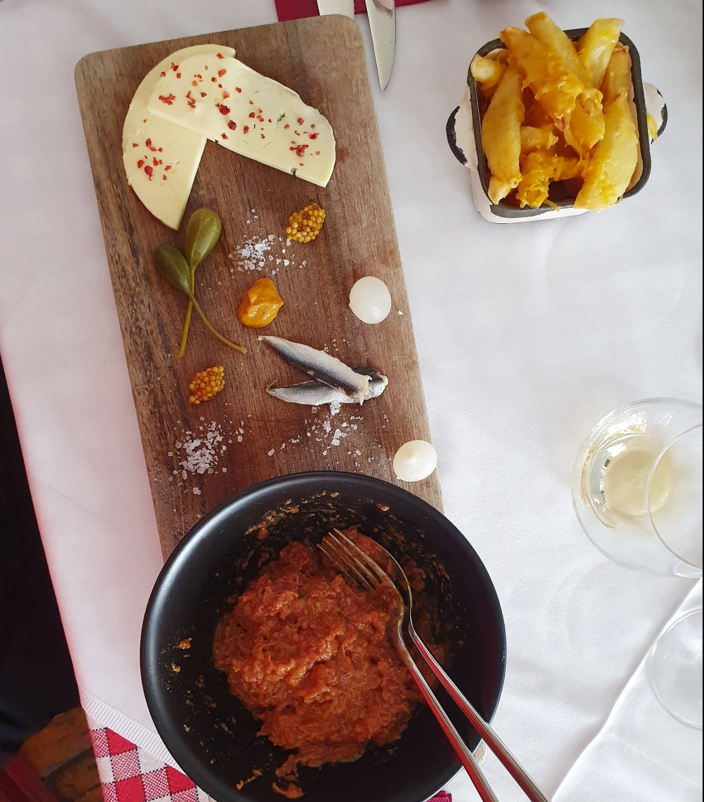
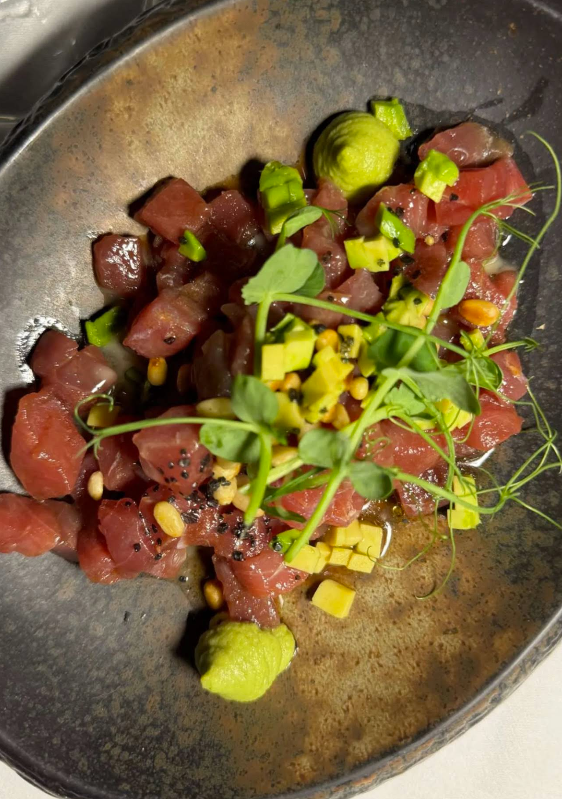
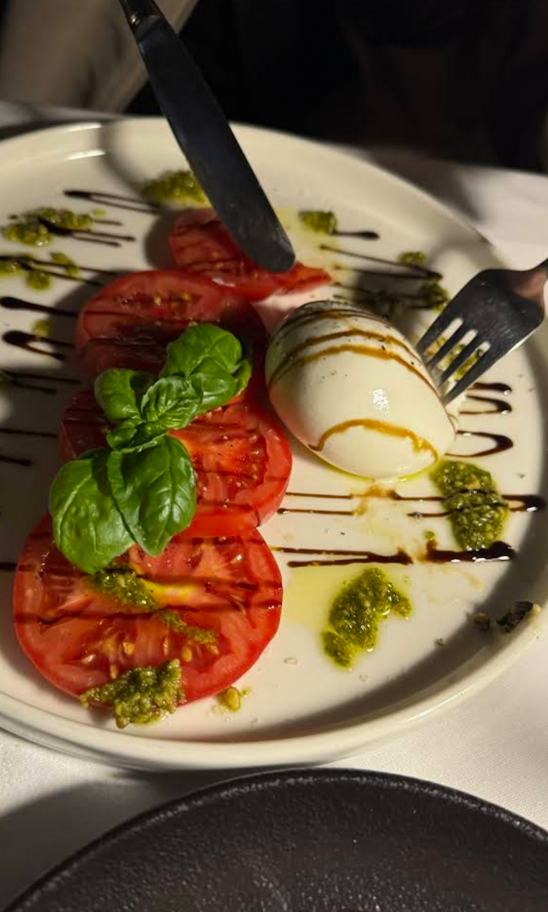
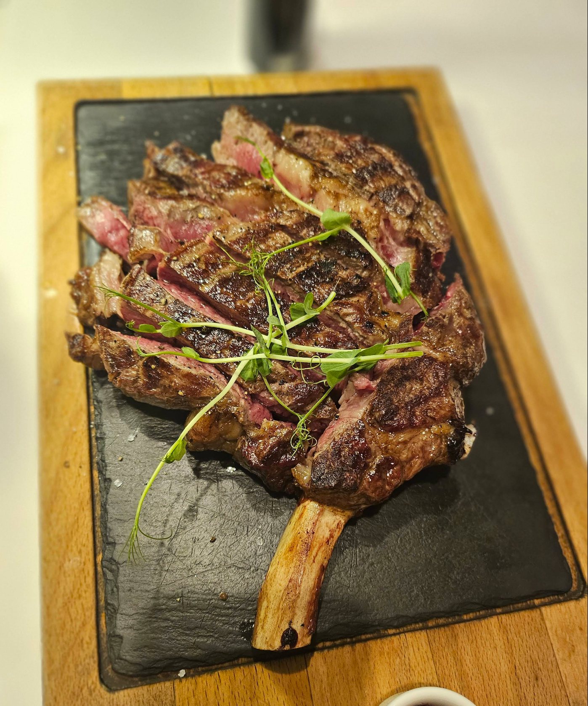
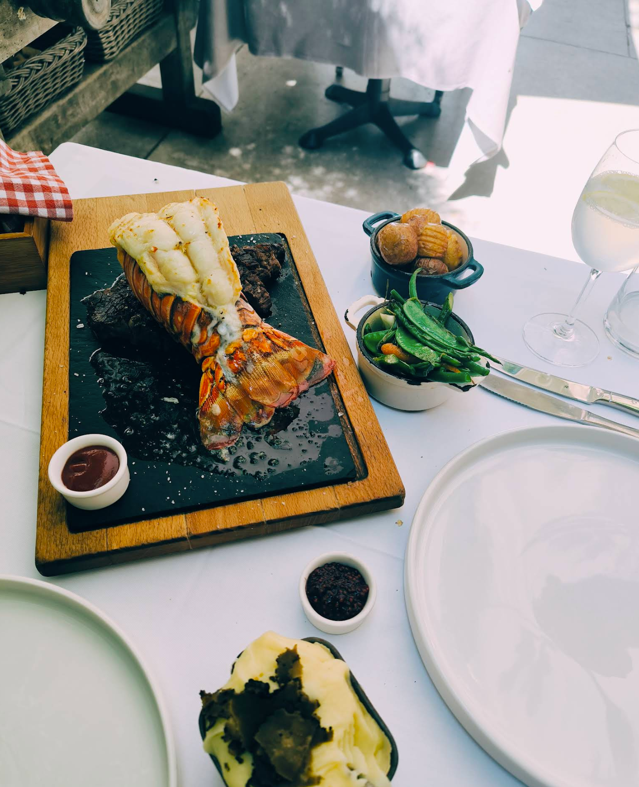
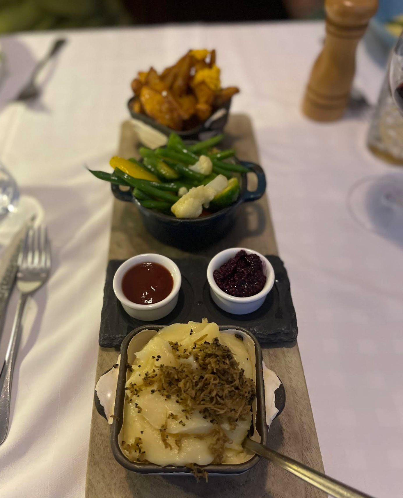
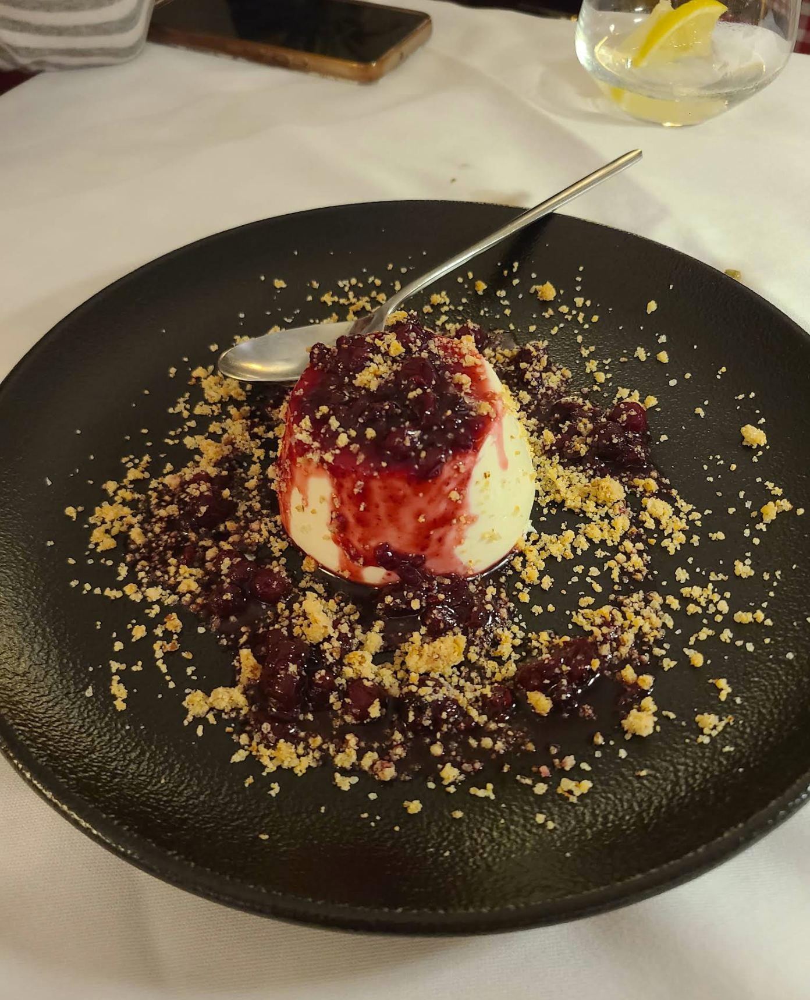
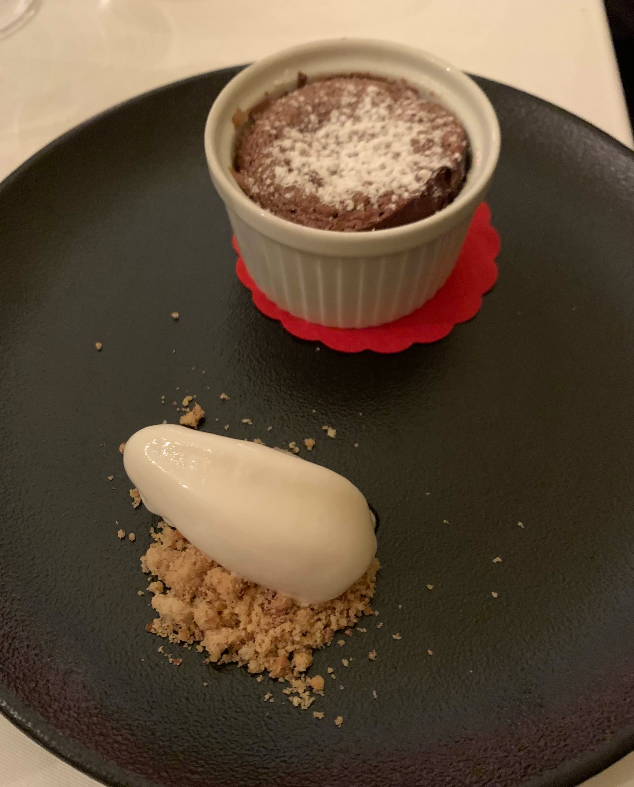
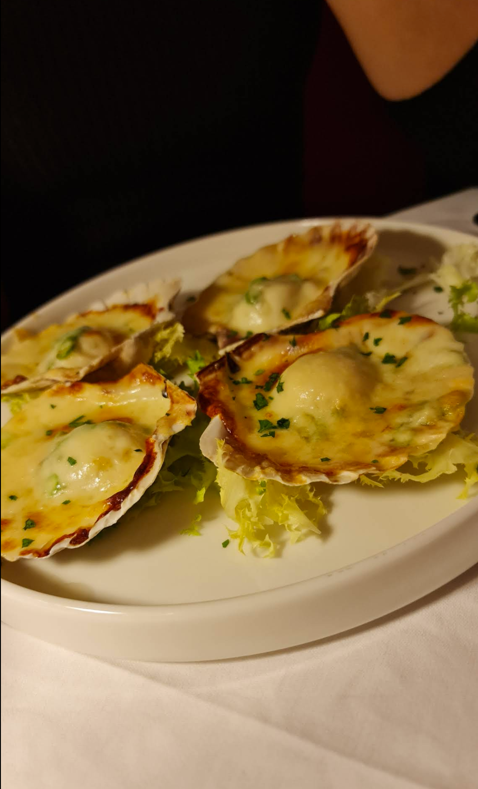

Špajza je skrita zakladnica okusov v samem srcu Ljubljane. Ponujamo pečene zrezke iz lastne zorilnice, sveže morske dobrote in mediteranske specialitete, pripravljene z izbranimi sestavinami in strastjo do dobre hrane. Dobrodošli k mizi, kjer je vsak obrok praznovanje.









| Pon – Pet | 17:00 – 23:00 |
| Sobota | 12:00 – 23:00 |
| Nedelja | 12:00 – 22:00 |